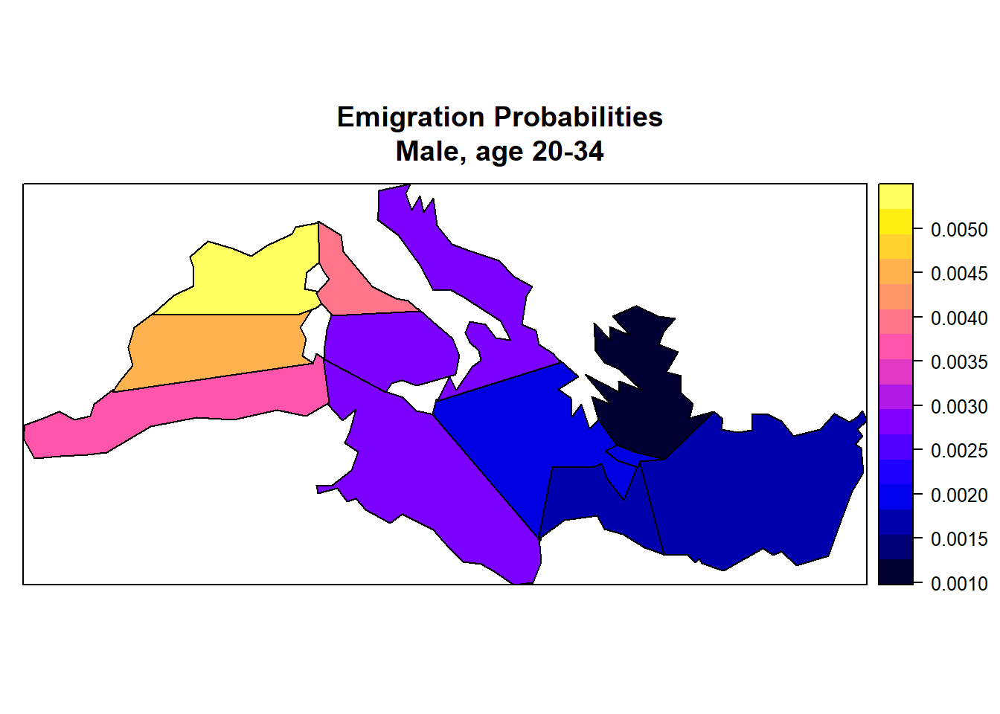

1.6. Script 6: Emigration¶
Emigration is modeled calculating probabilities by age, sex, and location from the census and a corresponding file of household members who left the country in the past year. Location refers alternatively to regions or districts (Users can choose which model to use)
1.6.1. File output¶
The code below generates 2 model parameters stored in a Modgen .dat file
- Emigration rates by age, sex and region
- Emigration rates by age, sex and district
1.6.2. Code¶
1.6.2.1. Emigration by Region¶
###################################################################################################
#
# DYNAMIS-POP Parameter Generation File 6 - Chunk A - Emigration by region
# This file is generic and works for all country contexts.
# Input file: globals_for_analysis.RData (To generate such a file run the setup script)
# Last Update: Martin Spielauer 2018-05-12
#
###################################################################################################
###################################################################################################
# Clear work space, load required packages and the input object file
###################################################################################################
rm(list=ls())
library(haven)
library(dplyr)
library(data.table)
library(sp)
library(maptools)
library(survival)
library(fmsb)
library(eha)
library(rgdal)
load(file="globals_for_analysis.RData")
dat_res <- g_residents_dat
dat_res <- dat_res[,c("M_WEIGHT", "M_AGE", "M_MALE", "M_DOR", "M_PDIST", "M_PREG", "M_ROR")]
dat_emi <- g_emigrants_dat
dat_emi <- dat_emi[,c("M_WEIGHT", "M_AGE", "M_MALE", "M_DOR", "M_PDIST", "M_PREG", "M_ROR")]
dat <- rbind(dat_emi,dat_res)
# Remove objects not needed anymore
rm(dat_emi)
rm(dat_res)
# Set Parameter Output File
parafile <- file(g_para_emigration, "w")
# constant
n_abroad = max(dat$M_DOR)
# Add an integer variable for age a year ago
dat$m_ageago <- as.integer(dat$M_AGE)-1
# remove those not born a year ago
dat <- dat[!(dat$m_ageago<0),]
# Age groups 5 years ago, up to 60+
dat$m_agegr5 <- as.integer(dat$m_ageago/5) * 5
dat$m_agegr5[dat$m_agegr5>60] <- 60
# Remove those not in the country 12 months ago
dat <- dat[dat$M_PDIST<n_abroad,]
# Person is emigrant
dat$is_migrant <- FALSE
dat$is_migrant[dat$M_DOR == n_abroad] <- TRUE
###################################################################################################
# Calculate the parameter EmigrationRates[SEX][AGE5_PART][PROVINCE_NAT] #
###################################################################################################
# Create the parameter for probability of out-migration by sex, age group and province of origin
popall <- xtabs(dat$M_WEIGHT ~ dat$M_MALE + dat$m_agegr5 + dat$M_PREG)
migs <- dat[dat$is_migrant==TRUE,]
migs <- migs[,c("M_WEIGHT", "M_MALE","m_agegr5" ,"M_PREG")]
###################################################################################################
# Create and append a dataset of all possible migrations for each age group
# This is to avoid empty cells in origin-destination matrices
# The records have very low weights which do not affect overall migration
###################################################################################################
umale <- unique(dat$M_MALE)
uage <- sort(unique(dat$m_agegr5))
upreg <- sort(unique(dat$M_PREG))
allmigs <- expand.grid(M_MALE=umale, m_agegr5=uage, M_PREG=upreg)
allmigs$M_WEIGHT <- 0.0000001
migs <- rbind(migs, allmigs)
popmig <- xtabs(migs$M_WEIGHT ~ migs$M_MALE + migs$m_agegr5 + migs$M_PREG)
propmig <- as.data.frame(popmig/popall)
propmig <- propmig[order(propmig$migs.M_MALE, propmig$migs.m_agegr5, propmig$migs.M_PREG),]
###################################################################################################
# Write the parameter EmigrationRates[SEX][AGE5_PART][PROVINCE_NAT]
###################################################################################################
cat("parameters { \n //EN Emigration Rates \ndouble EmigrationRates[SEX][AGE5_PART][PROVINCE_NAT] = {\n", file=parafile)
cat(format(round(-log(1-propmig$Freq),5),scientific=FALSE), file=parafile, sep=", ", append=TRUE)
cat("\n }; \n\n", file=parafile, append=TRUE)
###################################################################################################
# Illustration: Emigration rates in 5 selected Regions
###################################################################################################
# graph the probabilities
par(mfrow=c(1,2))
plot(1:13, xaxt = "n", propmig[propmig$migs.M_MALE==1 & propmig$migs.M_PREG==g_selreg1_val,"Freq"],col="red",
main = "Male Emigration",
sub = "(Selected Regions, 5 year age groups)",
xlab = "Age Group",
ylab = "Probability",
type = "l",
ylim=c(0,0.01),
xlim=c(1,13)
)
lines(1:13, propmig[propmig$migs.M_MALE==1 & propmig$migs.M_PREG==g_selreg2_val,"Freq"],col="blue")
lines(1:13, propmig[propmig$migs.M_MALE==1 & propmig$migs.M_PREG==g_selreg3_val,"Freq"],col="green")
lines(1:13, propmig[propmig$migs.M_MALE==1 & propmig$migs.M_PREG==g_selreg4_val,"Freq"],col="brown")
lines(1:13, propmig[propmig$migs.M_MALE==1 & propmig$migs.M_PREG==g_selreg5_val,"Freq"],col="orange")
legend(1,0.15,legend=c(g_selreg1_label,g_selreg2_label,g_selreg3_label, g_selreg4_label, g_selreg5_label),
col=c("red","blue", "green", "brown","orange"), lty=1)
axis(1, at=1:13, labels=c("0-4","5-9","10-14","15-19","20-24","25-29","30-34","35-39", "40-44", "45-49", "50-54", "55-59", "60+"))
plot(1:13, xaxt = "n", propmig[propmig$migs.M_MALE==0 & propmig$migs.M_PREG==g_selreg1_val,"Freq"],col="red",
main = "Female Emigration",
sub = "(Selected Regions, 5 year age groups)",
xlab = "Age Group",
ylab = "Probability",
type = "l",
ylim=c(0,0.01),
xlim=c(1,13)
)
lines(1:13, propmig[propmig$migs.M_MALE==0 & propmig$migs.M_PREG==g_selreg2_val,"Freq"],col="blue")
lines(1:13, propmig[propmig$migs.M_MALE==0 & propmig$migs.M_PREG==g_selreg3_val,"Freq"],col="green")
lines(1:13, propmig[propmig$migs.M_MALE==0 & propmig$migs.M_PREG==g_selreg4_val,"Freq"],col="brown")
lines(1:13, propmig[propmig$migs.M_MALE==0 & propmig$migs.M_PREG==g_selreg5_val,"Freq"],col="orange")
legend(1,0.15,legend=c(g_selreg1_label,g_selreg2_label,g_selreg3_label, g_selreg4_label, g_selreg5_label),
col=c("red","blue", "green", "brown","orange"), lty=1)
axis(1, at=1:13, labels=c("0-4","5-9","10-14","15-19","20-24","25-29","30-34","35-39", "40-44", "45-49", "50-54", "55-59", "60+"))
1.6.2.2. Emigration rates by District¶
###################################################################################################
#
# DYNAMIS-POP Parameter Generation File 6 - Chunk B - Emigration by district
#
###################################################################################################
###################################################################################################
# Calculate the parameter EmigrationRatesDistrict[SEX][AGE5_PART][DISTRICT_NAT]
###################################################################################################
# Create the parameter for probability of out-migration by sex, age group and province of origin
popall <- xtabs(dat$M_WEIGHT ~ dat$M_MALE + dat$m_agegr5 + dat$M_PDIST)
migs <- dat[dat$is_migrant==TRUE,]
migs <- migs[,c("M_WEIGHT", "M_MALE","m_agegr5" ,"M_PDIST")]
###################################################################################################
# Create and append a dataset of all possible migrations for each age group. This is to avoid empty
# cells in origin-destination matrices. The records have very low weights and do not affect
# overall migration
###################################################################################################
umale <- unique(dat$M_MALE)
uage <- sort(unique(dat$m_agegr5))
updist <- sort(unique(dat$M_PDIST))
allmigs <- expand.grid(M_MALE=umale, m_agegr5=uage, M_PDIST=updist)
allmigs$M_WEIGHT <- 0.0000001
migs <- rbind(migs, allmigs)
popmig <- xtabs(migs$M_WEIGHT ~ migs$M_MALE + migs$m_agegr5 + migs$M_PDIST)
propmig <- as.data.frame(popmig/popall)
propmig <- propmig[order(propmig$migs.M_MALE, propmig$migs.m_agegr5, propmig$migs.M_PDIST),]
###################################################################################################
# Write the parameter EmigrationRatesDistrict[SEX][AGE5_PART][DISTRICT_NAT]
###################################################################################################
cat("\n\n//EN Emigration Rates district level \ndouble EmigrationRatesDistrict[SEX][AGE5_PART][DISTRICT_NAT] = {\n", file=parafile, append=TRUE)
cat(format(round(-log(1-propmig$Freq),5),scientific=FALSE), file=parafile, sep=", ", append=TRUE)
cat("\n }; \n};\n", file=parafile, append=TRUE)
close(parafile)
###################################################################################################
# Illustration: Emigration rates in 5 selected Districts
###################################################################################################
par(mfrow=c(1,2))
plot(1:13, xaxt = "n", propmig[propmig$migs.M_MALE==1 & propmig$migs.M_PDIST==g_seldist1_val,"Freq"],col="red",
main = "Male Emigration",
sub = "(Selected Districts, 5 year age groups)",
xlab = "Age Group",
ylab = "Probability",
type = "l",
ylim=c(0,0.01),
xlim=c(1,13)
)
lines(1:13, propmig[propmig$migs.M_MALE==1 & propmig$migs.M_PDIST==g_seldist2_val,"Freq"],col="blue")
lines(1:13, propmig[propmig$migs.M_MALE==1 & propmig$migs.M_PDIST==g_seldist3_val,"Freq"],col="green")
lines(1:13, propmig[propmig$migs.M_MALE==1 & propmig$migs.M_PDIST==g_seldist4_val,"Freq"],col="brown")
lines(1:13, propmig[propmig$migs.M_MALE==1 & propmig$migs.M_PDIST==g_seldist5_val,"Freq"],col="orange")
legend(1,0.15,legend=c(g_seldist1_label,g_seldist2_label,g_seldist3_label, g_seldist4_label, g_seldist5_label),
col=c("red","blue", "green", "brown","orange"), lty=1)
axis(1, at=1:13, labels=c("0-4","5-9","10-14","15-19","20-24","25-29","30-34","35-39", "40-44", "45-49", "50-54", "55-59", "60+"))
plot(1:13, xaxt = "n", propmig[propmig$migs.M_MALE==0 & propmig$migs.M_PDIST==g_seldist1_val,"Freq"],col="red",
main = "Female Emigration",
sub = "(Selected Districts, 5 year age groups)",
xlab = "Age Group",
ylab = "Probability",
type = "l",
ylim=c(0,0.01),
xlim=c(1,13)
)
lines(1:13, propmig[propmig$migs.M_MALE==0 & propmig$migs.M_PDIST==g_seldist2_val,"Freq"],col="blue")
lines(1:13, propmig[propmig$migs.M_MALE==0 & propmig$migs.M_PDIST==g_seldist3_val,"Freq"],col="green")
lines(1:13, propmig[propmig$migs.M_MALE==0 & propmig$migs.M_PDIST==g_seldist4_val,"Freq"],col="brown")
lines(1:13, propmig[propmig$migs.M_MALE==0 & propmig$migs.M_PDIST==g_seldist5_val,"Freq"],col="orange")
legend(1,0.15,legend=c(g_seldist1_label,g_seldist2_label,g_seldist3_label, g_seldist4_label, g_seldist5_label),
col=c("red","blue", "green", "brown","orange"), lty=1)
axis(1, at=1:13, labels=c("0-4","5-9","10-14","15-19","20-24","25-29","30-34","35-39", "40-44", "45-49", "50-54", "55-59", "60+"))
1.6.2.3. Illustration: Map of Male Emigration Rates by District¶
###################################################################################################
#
# DYNAMIS-POP Parameter Generation File 6 - Chunk C - Illustration of Emigration by district
# MALE EMIGRATION PROBABILITIES AGE 20-34 BY DISTRICT
#
###################################################################################################
dat_male2035 <- dat[dat$M_MALE == 1 & dat$m_agegr5>=20 & dat$m_agegr5<=35, ]
popall <- xtabs(dat_male2035$M_WEIGHT ~ dat_male2035$M_PDIST)
migs <- dat_male2035[dat_male2035$is_migrant==TRUE,]
migs <- migs[,c("M_WEIGHT", "M_MALE","m_agegr5" ,"M_PDIST")]
###################################################################################################
# Create and append a dataset of all possible migrations for each age group. This is to avoid empty
# cells in origin-destination matrices. The records have very low weights which do not affect
# overall migration
###################################################################################################
umale <- unique(dat$M_MALE)
uage <- sort(unique(dat$m_agegr5))
updist <- sort(unique(dat$M_PDIST))
allmigs <- expand.grid(M_MALE=umale, m_agegr5=uage, M_PDIST=updist)
allmigs$M_WEIGHT <- 0.0000001
migs <- rbind(migs, allmigs)
popmig <- xtabs(migs$M_WEIGHT ~ migs$M_PDIST)
propmig <- as.data.frame(popmig/popall)
propmig <- propmig[order(propmig$migs.M_PDIST),]
country_shape <- rgdal::readOGR(g_shapes)
## Census districts as coded in Census in the order of districts in the Nepal shape object (ID_3)
country_shape$censusdist <- g_shape_display_order
###################################################################################################
# Function taking a SpatialPolygonsDataFrame and adding a vector of values to be displayed on map
# The values come in the order of provinces as coded in the census and are re-ordered to fit the
# Nepal shape object
###################################################################################################
AddVectorForDisplay <- function(country_shape,VectorForDisplay)
{
testb <- data.frame(cbind(new_order=country_shape$censusdist,orig_order=c(0:max(g_shape_display_order))))
testb <- testb[order(testb$new_order),]
testb$newcol <- VectorForDisplay
testb <- testb[order(testb$orig_order),]
country_shape$graphval <- testb$newcol
return(country_shape)
}
###################################################################################################
# Plot data
###################################################################################################
spplot(AddVectorForDisplay(country_shape,propmig$Freq),c("graphval"),
main = "Emigration Probabilities\nMale, age 20-34"
)
